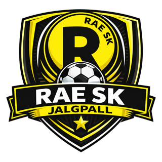

Noorte areng heade treenerite toel
Toetajate abil kaasame Norbert Hurda treenerite arendamisse ja lapsevanemate toetamisse. Ühine arengukava ning treeningumudel aitavad igal lapsel õppida, pingutada ja kasvada nii mängija kui inimesena.

Rae SK jalgpalliperes on juba täna 300+ last. Aitame neil kasvada tublideks ja enesekindlateks noorteks. Head treenerid toetavad nende arengut ning tugevam esindusmeeskond loob kogukonnale veelgi ägedamaid ühiseid elamusi.

Ühe klubi areng. Rohkem võimalusi kogu kogukonnale.
Toetajate abil kaasame Norbert Hurda treenerite arendamisse ja lapsevanemate toetamisse. Ühine arengukava ning treeningumudel aitavad igal lapsel õppida, pingutada ja kasvada nii mängija kui inimesena.
Toetuse abil tõstame esindusmeeskonna treeningute ja mängu taset. Oma meeskond annab noortele eeskuju ja arengutee kodukandis. Kolmeaastase arenguplaani sportlik siht on jõuda Esiliiga B-sse.
Esindusmeeskonna kodumängud toovad kokku lapsed, pered, toetajad ja kohalikud ettevõtjad. Tugevam meeskond ning paremini korraldatud mängupäevad annavad rohkem põhjust oma klubile üheskoos kaasa elada.
Meie visioon on luua terviklik jalgpallisüsteem, kus oma kasvandikud ja kogukond saavad osa Eesti tippliigade jalgpallist oma kodukandis. Tahame, et noor saaks oma unistuste poole liikuda kodu lähedal.
Loe Rae jalgpalli visioonistMeie toetajad aitavad noortel areneda ja kogukonnal kokku tulla. Ka sinu ettevõttel on siin oma koht.
Sinu ettevõte saab olla Rae noorte ja kogukonna arengu nähtav toetaja.
Koostöö võib hõlmata ettevõtte tutvustamist klubi kanalites, kodumängu partnerlust, töötajate ja perede ühiseid tegevusi ning suurema koostöö puhul vorminähtavust vabadel pindadel.
300 € aastas
Ole osa Rae SK kogukonnast ja aita luua noortele parem arengukeskkond. Toetajapakett sobib nii eraisikule kui ettevõttele.
Praegu kogume paketiga liitumise soove. Täpsustame enne arveldamist komplekti valiku, suurused ja tarneaja. Huvi registreerimine ei kohusta maksma.
Soovi korral saad fännikomplektist loobuda. Toetajaperiood kestab 12 kuud makse kinnitamisest ega pikene automaatselt. Toetajaks tulemine ei tähenda automaatselt MTÜ liikmeks astumist.

Toetajamärgis sinu veebilehel või kanalites näitab panust Rae noorte ja kogukonna arengusse.
Märgise originaalfaili ja kasutusreeglid saadab klubi pärast makse kinnitamist. Kasutusõigus kehtib toetajaperioodil ega anna õigust esineda klubi nimel.
Rae SK on läbipaistvalt juhitud kogukonnaklubi. Lepime toetuse eesmärgi ja kasutuse kokku ning jagame kaks korda aastas ülevaadet raha kasutusest ja tehtust.
Toetajatel on võimalus astuda MTÜ liikmeks ja klubi arengus kaasa rääkida. Liikmeks astumine toimub eraldi põhikirjas ette nähtud korras.
Klubi juriidilised andmed: FC Rae SK MTÜ, registrikood 80670097. Küsi klubi dokumentide kohta info@fcrae.ee.
Fännisärgi ja salli saad osta ka eraldi toetajapaketist. Vaata valikut fännipoest või küsi kodumängu müügipunktist.
Jah. Vaata plokki „Toeta sobiva summaga”. Väiksema summaga toetamine ei aktiveeri 300 € paketti ega selle hüvesid.
Jah, pakett sobib nii eraisikule kui ettevõttele. Praegu saad huvi registreerida; enne arveldamist kinnitame paketi täpsed tingimused.
Ei. Vorminähtavus lepitakse suurema koostöö osana eraldi kokku.
Ei. MTÜ liikmeks astumine toimub eraldi põhikirjas ette nähtud korras.
Üleandmine on kokkuleppel kodumängul. Klubi kinnitab mudeli, suurused ja tarneaja enne arveldamist. Soovi korral saad fännikomplektist loobuda.
12 kuud alates makse kinnitamisest. Pakett ei pikene automaatselt. Huvi registreerimine ei alusta toetajaperioodi.
Toeta summaga, mis on sulle jõukohane. See toetus ei aktiveeri aastast toetajapaketti.
Pangaülekande andmed avaldame peagi. Seni kirjuta meile ja saadame toetamiseks vajaliku info.
Küsi makseandmeidNeed on pangaülekande juhised. Ülekanne tee oma pangas; see leht ei kinnita makse laekumist.
Tuleme koos Norbert Hurdaga teie juurde, tutvustame visiooni ja arutame teie ettevõttele sobivat koostööd.
Jäta kontakt ja võtame ühendust, et arutada sinu ettevõttele sobivat koostööd.
300 € aastas. Registreeri huvi ja täpsustame sinuga paketi tingimused. See ei ole tellimus ega arve taotlus ning ei kohusta maksma.